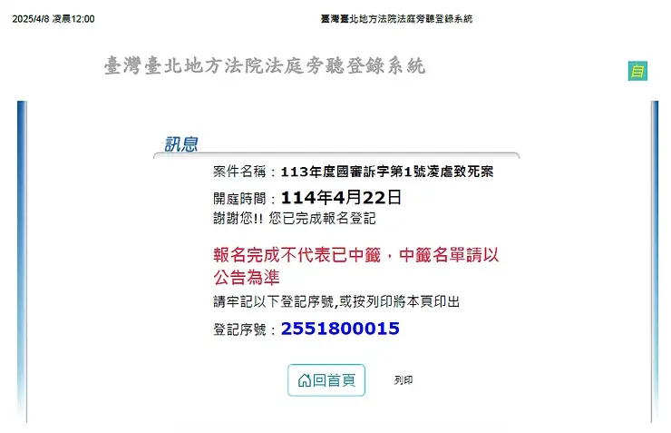

COURT HEARING RECORD · DAY 1
監所關注小組授權引用護童行動聯盟重點整理
第一次審判期日
\n悲劇不忘
剴剴案國民法官庭審紀錄｜2025年4月22日（二）
審判的第一天，法院先確認界線：哪些已無爭議，哪些仍須由證據回答。

本頁整理公開庭審紀錄。檢方、辯方及訴訟參與人的陳述均屬訴訟主張；除標示為「不爭執事項」者外，不代表法院已經認定。
01 · OVERVIEW
今日庭審速覽
第一次審判期日從程序提醒開始，進入檢辯開審陳述、爭點整理與事實部分證據調查，17時退庭。
02 · COURT RULES
法院先劃下審理界線
罪責與科刑分開
在尚未進入科刑階段前，不應先行陳述從重量刑等意見。
品行不得代替證據
品行或前科資料不能直接用來證明本案犯罪事實是否成立。
保護兒童隱私
庭審須避免揭露兒童照片、影片及足以辨識身分的資訊。
只辯論准許的證據
未經法院裁定進入調查範圍的資料，不應先行作為辯論基礎。
03 · OPENING STATEMENTS
三方如何提出案件輪廓
以下均為庭上主張，不代表法院認定。
以照護期間的行為、結果與鑑定建立舉證架構
檢方說明24小時托育背景、三處照護地點及被訴行為，並預告將提出影像、通訊紀錄、證人與醫療鑑定。
- 被告二人的具體行為
- 行為與死亡結果的關聯
- 孩子受托前後的身心狀況
否認凌虐，主張應檢視完整照護過程
辯方提出不同照顧者、交接時間、照護困難及死亡原因等面向，主張不能只以單一敘事理解事件。
聚焦角色、處境及主觀認知
辯方主張其並非主要照顧者，並將釐清是否曾主動詢問、對異常對待的認知，以及是否負有法律上的保證人義務。
04 · AGREED FACTS
不爭執事項
這些內容由法院在庭上整理為雙方不爭執的範圍；不等同於所有犯罪構成要件均已成立。
24小時托育開始
托育契約自9月1日起，每日費用為新臺幣1,000元。
多個日期留有束縛、遮眼或罰站相關影像
法院依日期整理影像所呈現的客觀狀態，行為的法律評價仍列為爭點。
曾至小兒科與牙科就醫
就醫紀錄將與生長狀況、牙齒傷勢及其他醫療證據一併調查。
00:27宣告死亡
死因被記載為低血容性休克；行為與結果間的因果關係仍須審理。
05 · DISPUTED ISSUES
法院仍須回答的六個問題
第一日先整理審理範圍。下列不是判決結論，而是法院後續必須依證據、鑑定與法律要件逐一回答的爭點。
爭點路徑01 / 06
是否存在凌虐、傷害或妨害自由行為？
法院須從影像、證詞與現場資料，判斷各項行為是否發生，以及其方式、強度與持續時間。
判讀提醒 指控內容仍須逐項證明，不能因單一片段直接推論全部事實。相關行為是否造成死亡結果？
須結合法醫、醫療與其他鑑定，判斷被指控行為與低血容性休克、最終死亡間的因果關係。
判讀提醒 「曾有行為」與「該行為造成死亡」是兩個不同層次的證明問題。是否妨害兒童身心發展及健全發育？
除身體傷勢外，法院也要檢驗飲食、活動、情緒與照顧條件，是否已影響兒童身心發展。
判讀提醒 需要把日常照顧脈絡與專業鑑定放在一起評價。兩名被告是否具有主觀犯意或犯意聯絡？
須分別判斷兩人對各項行為的認知與意圖，以及彼此間是否有共同意思或分工。
判讀提醒 同處一地或彼此有關係，不當然等於共同犯意。對死亡結果是否具有預見可能性？
法院須依照孩子持續呈現的狀況、照顧者掌握的資訊與行為發展，判斷是否可能預見重大風險。
判讀提醒 預見可能性須以當時可知資訊判斷，不能只從事後結果倒推。劉若琳是否具有法律上的保證人地位？
須檢驗其身分、照顧分工、實際參與及控制能力，是否使她負有法律上的防止結果義務。
判讀提醒 保證人地位處理的是作為義務，不等同於認定她曾直接實施特定行為。06 · EVIDENCE
證據如何進入法庭
庭上依書證、物證、影像、通訊與鑑定逐步建立可供檢驗的證據脈絡。
影像與生活紀錄
包括受托前後的生活影像、照護期間照片及罰站影片，用以比較身形、表情與照護狀態。
通訊對話
檢方提示照顧者間及外籍照護者與友人的訊息，法院提醒只能先呈現客觀內容，不能超出證據作詮釋。
醫療與鑑定
法醫、兒科及精神醫療鑑定分別處理死亡原因、傷勢成因與時間，以及精神虐待等問題。
現場與物證
三處地點的格局、室溫、房間狀況及血跡等資料，將與其他證據相互核對。
敏感內容展開閱讀傷勢與影像調查說明
庭上曾提示法醫檢驗、身體傷勢、牙齒缺損及死亡前後影像。為保護兒童尊嚴，本頁不重製照片，也不逐項放大描述；讀者可在充分準備後查閱原始庭審紀錄。
部分影像只在法官、國民法官及訴訟關係人面前的螢幕呈現，未投放至一般旁聽區可見的布幕。
07 · PROCEDURE
程序本身也是審判的一部分
鑑定人拒卻聲請
辯方質疑簡報備忘資訊顯示聯繫紀錄，法院當日說明裁定狀態，並預告後續處理。
國民法官審理
辯方聲請不採國民法官審理，合議庭裁定駁回。
被害兒童稱謂
法院考量兒少隱私與可識別性，庭上使用A童作為稱謂。
敏感證物呈現
法院處理原始照片、降低飽和度版本及出示時點，兼顧證明需求與兒童尊嚴。
FULL AUTHORIZED TRANSCRIPT · PROCEDURAL EDITION
第一日完整旁聽紀錄
以下依庭審程序與發言角色重新編排，不再按照PDF頁次切割。PDF全部正文均予保留；僅移除瀏覽器列印頁首、網址、頁碼及列印時間，未改寫原文內容。
黃色標記：PDF原文重點粉紅卡片：編輯爭點註記註記為閱讀輔助，不代表法院最終認定。
引用檔案：DAY1 ▌2025年4月22日（二）第一次審判期日.pdf｜資料提供：監所關注小組｜查看原始發布頁

COURT RECORD
審判長開庭前說明
稱謂、證據使用與程序注意事項
壹、審判長開庭前說明
一、被告涉犯罪名
二、起始程序：審判長提醒注意事項
不要在非科刑階段陳述從重量刑等語。
關於被告之品行或犯罪前科之資料，不得作為證明本案犯罪事實成立與否之證據。（國民法官法施行細則第121條規定）
不得揭露兒童照片、影片。
罪責或科刑階段，謹慎使用證物照片、影片。
不得就未經裁定之證據辯論。（國民法官法施行細則第230條規定）
三、辯護人申請拒卻鑑定人丘彥南醫師，認檢察官與鑑定人之簡報未將備忘欄刪除，有雙方之聯繫紀錄而有偏頗之虞。亦未給辯護人陳述意見即准裁定調查證據。審判長表
示該裁定不得抗告。
四、劉若琳辯護人聲請不採國民法官審理。合議庭裁定駁回，理由是：在選任前的調查表、個別／分組詢問及選任後再詢問，都並沒有劉若琳主張網路及媒體會導致審判之
進行。
五、被害兒童的稱謂問題，應稱其小名（檢察官簡報）或A童。辯護人表示依照《兒童及少年福利與權益保障法》第69條規定，不得記載足資識別身分之資訊。法院合議庭
評論，以小名稱呼被害兒童，將足以辨識，故應以A童稱呼。
六、檢察官陳述起訴要旨
審判長／法院
劉彩萱與劉若琳共同照護剴剴，經辯護人表示依《兒童及少年福利與權益保障法》第69條規定，不得記載足資識別身分之資訊。法院合議庭評論，以小名稱呼被害兒童，
將足以辨識，故應以A童稱呼。劉彩萱於4號1樓之登記托育地（稱甲地）照護A童、4號3樓為劉若琳之住所及登記托育地（丙地）、6號3樓為劉彩萱之住家（乙地）。因被
告二人之凌虐行為，致A童於112年12月24日凌晨死亡。檢方起訴法條有：(1) 刑法第286條第1、3項、(2) 兒童及少年福利與權益保障法第112條第1項前段、刑法第302條之1
第1項第4款及第2項、(3) 刑法第277條及刑法第28條共同正犯。
七、被告、辯護人表明對起訴犯罪事實之意見：被告劉彩萱哭泣表示，其承認有體罰，但沒有凌虐。
貳、開審陳述（罪責）
COURT RECORD
檢察官開審陳述
背景、起訴事實與舉證計畫
一、檢察官開審陳述：
（一）背景介紹：告訴人嚴○娟為A童之外婆。112年9月至12月期間，由被告劉彩萱與兒福聯盟簽訂24小時托育契約，契約金額為每日1,000元，每月3萬～3萬1千元。112年
12月24日凌晨，A童死亡時僅有1歲10月。
（二）被告劉彩萱與A童相處地點有三：甲地（4號1樓）為劉彩萱登記托育地、證人Mira工作生活地點；乙地（6號3樓）為劉彩萱住處；丙地（4號3樓）劉若琳登記托育
地及住處。
（三）起訴事實：被告被訴妨害自由致死、傷害致死、妨害幼童身心發展致死。A童於112年9月前由周姓保母照護，後因A童之外婆決定將A童出養，故由兒福聯盟為收出養
媒合機構。惟被告劉彩萱卻以綑綁、塞入水桶、遮蔽眼睛、裸體躺地上、徒手毆打、用器具打、從背後推、從背後刮、消極不送醫、餵食不潔食物、洗冷水澡及留在雜物間
角落等凌虐行為，致A死亡之結果。A之死因為組織細胞血液灌流不足（低血容性休克）。
（四）舉證計畫：
1. 書證、物證之提出
2. 證人之詢問
3. 鑑定人之詢問
4. 被告之詢問
（五）待證事實及舉證內容：
1. 被告二人之行為
A童遭綑綁照片
證人Mira拍攝A罰站影片
Mira與友人間對話記錄
被告二人間對話記錄
2. 行為造成之結果
A童過世前照片
A童過世後傷勢照片
地檢署法醫及鑑定人之檢驗、鑑定報告
A. 許倬憲法醫：A童死亡原因、解剖經過
B. 呂立醫師：A童是否受虐、傷勢成因、傷勢時間、牙齒為何脫落
C. 丘彥南醫師：A是否遭受精神上虐待、是否有產生創傷後症候群
3. A童案前狀況
周保母提供影片
劉彩萱拍的生活照
證人周保母之證詞
COURT RECORD
劉彩萱辯護人開審陳述
辯方提出的案件敘事與爭點
二、劉彩萱辯護人開審陳述：
案件背後之真相
（一）四個全日保母：外婆、蕭保母、周保母、劉彩萱
（二）半個上午的交接
（三）兩個求救者：由證人王○弘即劉彩萱之子、證人即共同被告劉若琳、被告劉彩萱自己的陳述，及被告二人之對話紀錄，說明A童行為之狀況
（四）一場悲劇：接手照顧的困難（困難餵食、自傷行為、睡眠狀況等）、A的大體照片、鑑定人許倬憲法醫師之說明
（五）悲劇背後的省思：非只有尋找兇手、瞭解事件全貌、避免再次重演、系統性的全面檢討
COURT RECORD
劉若琳辯護人開審陳述
角色、處境與保證人地位爭議
三、劉若琳辯護人開審陳述：
“To be or not to be, that is the question.” 要繼續維持現狀，或作出改變。透過劉若琳的角色、處境與心理狀態來說明，劉若琳為何不去質疑劉彩萱的不當行為。待證事
實：
（一）劉若琳非主要照顧者
（二）A有異常自傷行為
（三）發現A受異常對待時，劉若琳有主動詢問
（四）失婚成為單親媽媽後返回娘家的處境尷尬
COURT RECORD
準備程序結果
不爭執事項與六項爭執事項
參、準備程序結果前之說明：審判長說明不爭執事項及爭執事項
一、審判長說明不爭執事項（書證及物證之調查）：
（一）OO路16巷址為登記托育地
（二）112年9月17日有以毛巾、布條綑綁四肢
（三）112年9月27日以魔鬼氈束繩、口罩遮眼
（四）112年10月6日全身包布由肩至肚、戴口罩
（五）112年11月23日以水果用尼龍網包覆頭部
（六）罰站
（七）112年11月至小兒科診所就醫。（以上為劉彩萱部分）
（八）劉若琳於劉彩萱外出時，協助看顧A童
（九）A童死因為低血容性休克而停止呼吸死亡
二、審判長說明爭執事項：
（一）是否有凌虐、傷害及妨害自由行為
（二）上開行為是否導致A死亡結果
（三）是否有妨害A身心發展、健全發育之行為
（四）被告二人之主觀犯意及犯意聯絡
（五）若出於凌虐等行為，就死亡結果有無預見可能性
（六）被告劉若琳是否具有保證人地位
COURT RECORD
不爭執事項證據調查
案發經過、托育關係、就醫與死亡結果
肆、關於事實部分之證據調查程序：檢察官不爭執事項（書證及物證之調查）
一、案發經過
（一）112年9月17日於乙地電腦房（有綠色巧拼）以毛巾、布條綑綁A童照片。左手綁左腳、右手綁右腳
（二）以毛巾綁頭、尾段再以布巾收束、右手左手互相纏繞
（三）112年9月27日以魔鬼氈束繩、眼罩遮眼
（四）將A手腳綁在木凳椅腳、再連同後方電腦椅，以○○旅行社之行李箱束帶纏繞
（五）A童被固定之黑色椅腳有斷裂
（六）112年9月27日以水果用尼龍套套頭、戴口罩
（七）112年10月6日全身包得像木乃伊、戴口罩
（八）112年11月23日以尼龍網袋套頭
（九）Mira於112年10月12日拍攝照片（以上為劉彩萱部分）
（十）劉若琳有造成A童右頸刮痕
二、被告與A之關係：
托育契約，自112年9月1日開始收托，為24小時托育，每日托育金額為1,000元。
三、A之就醫記錄
（一）112年11月23日○新牙醫初診
（二）112年12月24日劉彩萱之配偶王○○對A童做CPR、打119
四、A死亡之結果：112年12月24日00:27宣告死亡（萬芳醫院急診室）
五、本案經合法告訴：本案經A之外婆及新北市政府（依兒少福法第112條第2項規定）提出告訴
COURT RECORD
爭執事項證據調查
傷勢、死因、對話紀錄與案發現場
伍、關於事實部分之證據調查程序：檢察官爭執事項（書證及物證之調查）
一、A童傷勢及死因
（一）被告拍攝之照片：於112年11月5日凌晨04:45掰開嘴巴的照片，其中牙齒有缺口
（二）法醫檢驗報告：法醫檢驗報告提及，A童雙腿有大面積瘀傷、營養不良、身體正面至少有11處瘀傷、左手第4、5指尖瘀傷、額頭有大面積瘀傷、左唇內有傷口、下排
門牙缺4牙、陰莖根部、陰囊擦傷、皮下軟組織血液淤積
（三）學齡前兒童發展檢核表：依112年9月19日A童於1歲6個月時填寫之學齡前兒童發展檢核表所載，沒有一個欄位是勾選在有問題需就醫的欄位。
二、被告二人之行為
（一）證人Mira與友人之對話紀錄：Mira於對話記錄中傳送"It’s so terrible that she can just be the baby like that.”（勘誤：應為 ”beat”，打）
（二）被告二人間之對話紀錄（劉彩萱於社群上之名稱為Judy Shen；劉若琳為Helen Shen）
1. 112年9月7日托育第一週01:29時之對話紀錄，討論A童之右頸遭劉若琳刮傷，二人討論應如何應對社工。劉若琳表示，社工來時讓他去睡，社工不會叫醒睡覺的小孩。
另外並表示被綁著躺不舒服的。劉彩萱：一直撞頭想睡我房間。03:10劉若琳：不讓他吹冷氣。劉彩萱：回來讓我綁手、綁好就睡了。
2. 112年9月27日劉彩萱表示：A童於洗澡時故意大叫求救。另表示其身體快掙脫了、在大哭大叫。
3. 112年10月1日劉彩萱連續傳四張照片給劉若琳，照片中A童的頭被包水果用的尼龍套套住。劉彩萱表示：「我警告他，沒人可以救你、沒有用。」劉若琳詢問：「為何
哭」、劉彩萱回答：「他看到我兒子」。審判長諭知：只能呈現客觀證據之內容，不能多加詮釋。
4. 劉彩萱對話紀錄中表示：「不然他搞死自己等於搞死我」。劉若琳：「我們家被他臭」、「我們家今天也會被他搞臭」、「桶仔翻過去」、「反巧」、「反ㄎ一ㄠ」。
5. 其他呈現在對話紀錄中之訊息：「走樓梯邊哭」、「打手臂」、「教阿，所以剛重重打了5手印」、「他真的顧人怨、不討喜」、「我沒在看他、看他會影響心情」、
「從樓梯摔下來，包更大」、「他很假仙、欠揍」、「剛剛才被我揍完」
6. 112年12月3日00:25（傳訊時間）：「A一直站」。其他呈現在對話紀錄中之訊息：「看了就很想一巴掌轟給他死」。00:40「他站在我前面一直剉」、「我每天為了不
讓他睡結果自己也不能睡」、「死小孩在幹麻」、「不然我怕我又失手打暈他了」
7. 112年12月23日對話劉彩萱：「沒心跳了」、劉若琳：「繼續救」
（三）案發現場
1. 112年11月台北的平均氣溫為攝氏22度
2. 112年12月台北的平均氣溫為攝氏18.8度
3. 甲地之室內格局平面圖（第20頁繪圖）。由證人Mira提供影片，A站在客廳通往地下室門口之角落，身體僅穿尿布、口罩遮住眼鼻。在前述角落牆壁處，經DNA鑑定為
A童血跡，且於浴室門口地板也有血跡
4. 乙地（劉彩萱之住處、6號3樓）電腦房為A童之陳屍房間。房間內未見床鋪、地上有浴巾、上有血跡
COURT RECORD
影片與截圖提示
影像資料的播放與觀看限制
陸、關於事實部分之證據調查程序：檢察官爭執事項（播放影片及提示截圖）
辯護人
本程序播放之影片及照片，為符合兒童及少年福利與權益保障法之規定，均未於投影布幕上呈現，只有在職業法官、國民法官及檢察官、辯護人、訴訟參與代理人之前方螢
幕呈現
一、檢察官首先播放前保母——周姓保母提供之影片，影片中有兩小孩同樂，檢察官請法官們注意當時A童的身形及表情
二、再播放112年11月29日A於被告照顧時之影片，檢察官同樣請國民法官注意A之身形及表情
三、檢察官提示證人Mira拍攝之影片，並有拍攝影片之截圖，此為A被罰站於客廳通往地下室角落的影片。此時檢察官請法官注意A童口罩配戴的位置、衣著及動作
COURT RECORD
劉彩萱辯護人意見
對檢方書證及物證的回應
柒、關於事實部分之證據調查程序：劉彩萱辯護人對於檢方提示書證及物證表示意見
一、先表明為法扶指派律師
二、針對A童於112年9月時手腳綑綁的照片，將以訊問被告劉彩萱的方式說明
三、針對Mira之證詞及影片，認為Mira僅看到或拍到A童站在那裡的狀態，並沒有看到虐待的狀況
四、又依A童於112年11月7日於小兒科診所就醫之診斷記錄（審判長諭知同步提示甲證79），其中有記載86、10.6、47、50℅等文字，推知其生長曲線均為正常。
五、再以訊問被告劉彩萱之方式，說明甲地孝親房是否能看到浴廁及遊戲間之狀況。
COURT RECORD
劉若琳辯護人意見
對檢方書證及物證的回應
捌、關於事實部分之證據調查程序：劉若琳辯護人對於檢方提示書證及物證表示意見
針對112年11月2日之狀況，並非在劉若琳之居家托育地點。
COURT RECORD
訴訟參與代理人意見
對影像狀態與診斷紀錄的提醒
玖、關於事實部分之證據調查程序：訴訟參與代理人對於檢方提示書證及物證表示意見
訴訟參與
請法官們留意A童左手綁左腳、右手綁右腳、頭被布纏繞、眼睛遮蔽、雙腿反摺、頭部懸空的照片狀態。及甲證79診斷紀錄的數字並未寫明係指生長曲線。
COURT RECORD
照片聲請、法院裁示與退庭
原始檔案照片、鑑定簡報與後續裁示
壹拾、關於事實部分之證據調查程序：檢察官就A童之死後大體照片（甲證12一系列）聲請原始檔案照片。因目前是降低飽和度50℅的呈現，惟須看原始檔案才能看清楚瘀
辯護人
傷狀況。劉若琳辯護人表示：雙方已協議好降低飽和度方式出證，且有重複出證的狀況。
壹拾壹、審判長請國民法官先退庭後，就證據照片的出示，請在鑑定人各自之簡報中出示。又針對是否拒卻丘彥南醫師之鑑定，將於4月25日裁示。
17:00 退庭
17:00 · COURT ADJOURNED
第一日，退庭
這一天尚未回答誰的說法成立。法院先確認爭點、證據範圍與調查方式，讓後續的證人、鑑定與交互詰問有清楚的起點。
資料來源
閱讀原始紀錄 ↗監所關注小組 Prison Watch
原文：DAY1｜2025年4月22日（二）第一次審判期日
本頁經監所關注小組授權引用，由護童行動聯盟重新整理、編排與製作動畫；如內容有疑義，以原始紀錄及法院公開資料為準。